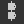
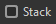
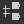

The Node Alignment Tools let you arrange nodes in graphs to improve their readability and authoring experience. They offer actions for aligning nodes, distributing them evenly and snapping them to the grid.
They act on the nodes currently selected only.
Some actions have keyboard shortcuts for quick acces: H, V and S. They are displayed between parentheses in the list of actions below.
Note that these will override any keyboard shortcut assigned to nodes.
In this page
Nodes may be aligned horizontally and vertically, with three modes for each axis:
Horizontal alignments
Left: Align the left side of the selected nodes to the left side of the leftmost node.
 Center (H): Align the horizontal center of the selected nodes to the horizontal center of the bounding box encompassing them.
 Right: Align the right side of the selected nodes to the right side of the rightmost node.
Right: Align the right side of the selected nodes to the right side of the rightmost node.
Left
Center
Right
Vertical alignments
Top: Align the top side of the selected nodes to the top side of the uppermost node.
Middle (V): Align the vertical center of the selected nodes to the vertical center of the bounding box encompassing them.
 Bottom: Align the bottom side of the selected nodes to the bottom side of the lowermost node.
Bottom: Align the bottom side of the selected nodes to the bottom side of the lowermost node.

Top
Middle
Bottom
Stacking
The Stack option  lets you avoid any overlap when using alignments. It is enabled by default.
When enabled, nodes will be moved as far as possible to the reference position until they would collide with another node in the selection. This effectively stacks them in the selected axis with a margin of one medium grid cell between each node.
Nodes can be distributed evenly between the nodes at each extremes of the current selection on the desired axis.
 Horizontally: Nodes are distributed evenly between the leftmost and rightmost nodes in the selection.
Horizontally: Nodes are distributed evenly between the leftmost and rightmost nodes in the selection.
 Vertically: Nodes are distributed evenly between the topmost and lowermost nodes in the selection.
The distributions aim for even spacing between the nodes, regardless of their size.
When multiple nodes have their centers perfectly aligned on the selected axis, they remain and are treated as one in the distribution. The largest of the aligned nodes is used for computing the even spacing.
Note that when the total size of the selected nodes is greater than the space available on the selected axis, overlapping may occur.
Horizontally

Vertically